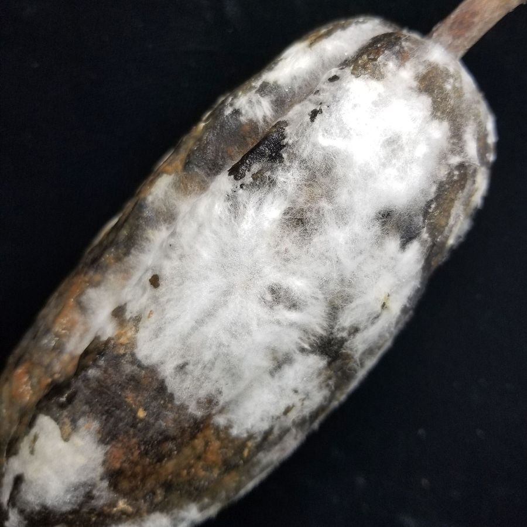
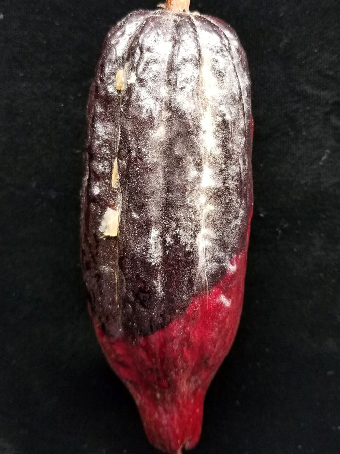
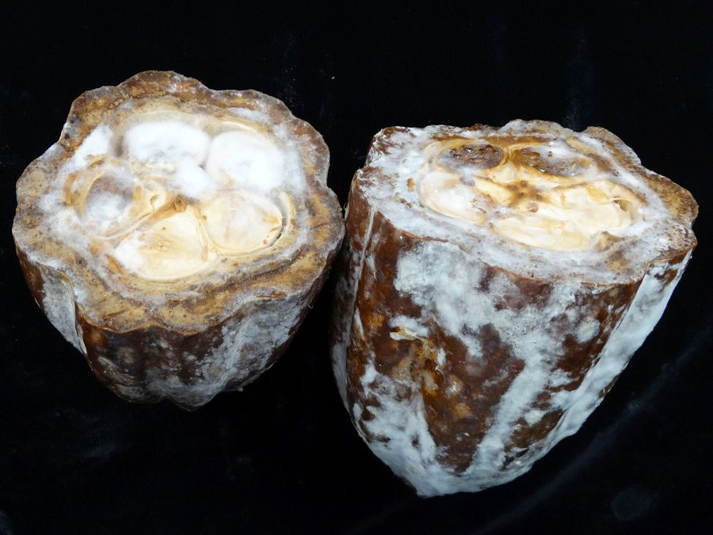
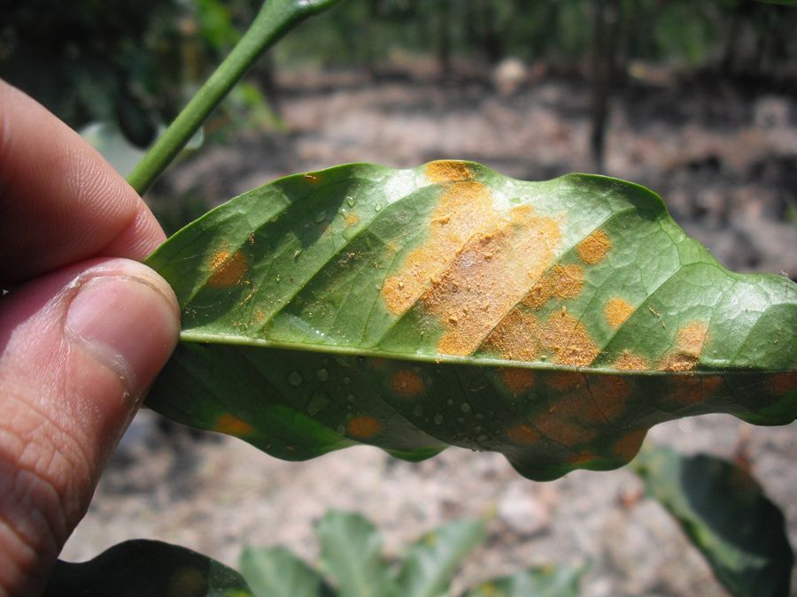

Café y cacao · San Martín
Detecta a tiempo las plagas de tu cultivo, sin internet
Fotografía la hoja o el fruto y AgroIA te dice qué tiene y qué hacer, en tu celular. Pensado para cooperativas y productores de cacao y café.

Cómo funciona
Tres pasos, sin conexión a internet
Toma la foto
Fotografía la hoja o el fruto con tu celular.
Analiza en tu celular
El análisis corre en el teléfono. No necesita internet.
Avisa a tu cooperativa
Si el caso es serio, la alerta se envía a tu cooperativa y a tu técnico apenas haya señal.
Beneficios
Funciona sin internet y a pleno sol
Sin internet
El diagnóstico no depende de la señal.
Resultado en segundos
Sabes qué tiene tu planta al instante.
Historial para certificaciones
Cada inspección queda registrada.
Alertas a tiempo
Tu cooperativa actúa antes de que se pierda la cosecha.
Qué detecta
Las plagas que más pérdidas causan

Moniliasis
Polvo blanco sobre la mazorca de cacao. Avanza rápido si no se retira a tiempo.

Mazorca negra
Manchas oscuras que se extienden por el fruto del cacao.

Roya del café
Polvo anaranjado en el envés de la hoja del cafeto.
Fotografías de Wikimedia Commons (Scot Nelson, CC0; Smartse, CC BY-SA 3.0).
Casos de uso
Pensado para el campo de San Martín
Productor
Revisa su parcela, sabe qué hacer y guarda lo que aplicó, aunque no tenga señal.
Técnico de campo
Registra inspecciones sin libreta; el reporte llega a la cooperativa cuando recupera la señal.
“Me parece una herramienta muy práctica porque en el campo no tenemos internet y nos ayudaría a no perder tiempo esperando que llegue el técnico para curar las plantas.”
Planes
Un plan para cada necesidad
Elige según el tamaño de tu organización.
Plan Productor
Bajo costo
Suscripción para productores
- Diagnóstico sin conexión
- Historial de tus parcelas
- Alertas a tu cooperativa
Plan Cooperativa
A medida
Licencia institucional
- Todo lo del Plan Productor
- Panel de socios y reportes
- Mapa de calor del territorio
Ficha técnica de AgroIA (PDF)
Características del producto para compartir con tu directiva.
Preguntas frecuentes
Resolvamos tus dudas
¿Funciona sin internet?
Sí. El análisis se hace en tu celular. La señal solo se usa para enviar las alertas y sincronizar el historial.
¿Quién ve mis fotos?
Las fotos se quedan en tu celular. A la cooperativa solo se envía el resultado de las alertas que tú configuras.
¿Cuánto cuesta?
Hay un plan de bajo costo para productores y una licencia a medida para cooperativas. Pide una demostración y te enviamos la propuesta.
¿Reemplaza al técnico?
No. AgroIA orienta y avisa a tiempo, pero la dosis y el tratamiento se confirman con tu técnico de campo.
Solicita una demostración
Los campos con * son obligatorios.